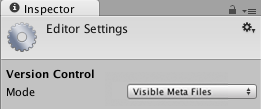
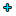

Version control integration (Team License)
Unity supports version control integration with Perforce and Plastic SCM, refer to these pages for specific information regarding your choice of version control.
Why should I use version control?
Using a version control system makes it easier for a user/multiple users to manage their code. It is a repository of files with monitored access, which in the case of Unity, will be all the files associated with a Unity project. With version control it is possible to follow every change to the source along with information on who made the change, why they made it and what they changed/added. This makes it easy to revert back to an earlier version of the code or to compare differences in versions. It also becomes easier to locate when a bug first occurred along with what code might have caused it.
Setting up your version control in Unity
Follow these steps once you have your version control software setup according to their own instructions:
Setup or sync a workspace on your computer using your chosen client (refer to the Plastic SCM Integration guide or the Perforce Integration guide for help with this step).
Copy an existing project into the workspace or start Unity and create a new project in the workspace.
Open the project and go to the Edit->Project Settings->Editor menu.
Choose your version control Mode according to the version control system that you chose.
Fill out your version control settings, such as username / password / server / workspace.
Keep Automatic add checked if you want your files to be automatically added to version control when they’re added to the project (or the folder on disk). Otherwise you will have to add new files manually.
You have to option to work in offline. This mode is only recommended to advanced users who know how to manually integrate changes back into their choice of version control (Working offline with Perforce).
The Asset Serialization, Default Behaviour Mode and Sprite Packer options can be edited to suit your team’s preferences and choice of version control.
Click connect and verify that “Connected” is displayed above the connect button after a short while.
Use your standard client (e.g. p4v) to make sure that all files in the Assets and ProjectSettings folders (including files ending with .meta) are added.
N.B. At any point you can go to the Prefences menu and select External Tools and adjust your Revision Control Diff/Merge tool.
Using version control
At this point you should be able to do most of the important version control operations directly by right-clicking on the assets in the project view, instead of going through the version control client. The version control operations vary depending on which version control you choose, this table shows what actions are directly available for each version control:
| Version Control Operation | Description | Perforce | Plastic SCM |
| Check Out | Allows changes to be made to the file | Yes | Yes |
| Diff against head | Compares differences between file locally and in the head | Yes | Yes |
| Get Latest | Pull the latest changes and update file | Yes | No* |
| Lock | Prevents other users from making changes to file | Yes | No** |
| Mark Add | Add locally but not into version control | Yes | Yes |
| Resolve Conflicts | To resolve conflicts on a file that has been changed by multiple users | Yes | No*** |
| Revert | Discards changes made to open changed files | Yes | Yes |
| Revert Unchanged | Discards changes made to open unchanged files | Yes | Yes |
| Submit | Submits current state of file to version control | Yes | Yes |
| Unlock | Releases lock and allows changes to be made by anyone | Yes | No** |
* To get the latest changes and update the file using Plastic SCM, you need to use the version control window.
** Locking and Unlocking using Plastic SCM require you to edit a specific Plastic SCM lock file externally, see the Plastic SCM Integration page for more information.
*** Conflicts are shown within the version control menu but resolved in the Plastic SCM GUI.

Version Control Window
You can overview the files in your changelist from the Version Control Window (Window->Version Control). It is shown here docked next to Inspector in the editor:

The ‘Outgoing’ tab lists all of the local changes that are pending a commit into version control whereas the ‘Incoming’ tab lists all of the changes that need to be pulled from version control.
By right clicking assets or changelists in this window you perform operations on them. To move assets between changelists just drag the assets from one changelist to the header of the target changelist.
Icons
The following icons are displayed in Unity editor to visualize version control status for files/assets:
| Icon | Meaning | Additional information |
 |
File added locally | Pending add into version control |
|  | File added to version control by another user | Pending add into version control |
 |
File is checked out by you | Checked out locally |
 |
File is checked out by another user | Checked out remotely |
| There has been a conflict merging this file | Needs to be resolved | |
 |
File has been deleted by you | Pending deletion in version control |
| File has been deleted by another user | Pending deletion in version control | |
 |
File is not yet under version control | n/a |
 |
File is locked by you | Cannot be modified by other users |
 |
File is locked by another user | Cannot be modified by you |
 |
Another user has checked in a new version of this file | Use “Apply Incoming Changes” to get latest version |
Things to note:
- Certain version controls will not allow you to edit assets until they’re marked as Checked out (unless you have Work offline checked).
- When saving changes to a .scene file it will automatically be checked out.
- Project Settings inspectors have a checkout button in the bottom right that allow you to checkout settings.
- A yellow warning will often appear to remind you to check out items in order to make changes to them, this mostly applies to Project Settings inspectors.
- In Plastic SCM automatically generated assets such as light maps are automatically added/checked out.
Automatic revert of unchanged files on submit
When working with assets, Unity automatically checks out both the asset file as well as the associated .meta file. In most situations however, the .meta file is not modified, which might cause some extra work e.g. when merging branches at a later point.
Offline Mode
Unity supports working in offline mode, e.g. to continue working without a network connection to your version control repository.
- Select Work offline from Version Control Settings if you want to be able to work disconnected from version control.
Troubleshooting
If Unity for some reason cannot commit your changes to your version control client, e.g. if server is down or license issues, your changes will be stored in a separate changeset.
Working with the Asset Server
For work with the Asset Server (Unity’s internal Version Control System) refer to the Asset Server documentation.
Working with other version control systems
In order to work with a version control system unsupported by Unity, select MetaData as the Mode for Version Control in the Editor Settings. This allows you to manage the source assets and metadata for those assets with a version control system of your choice. For more on this, see the documentation for External Version Control Systems